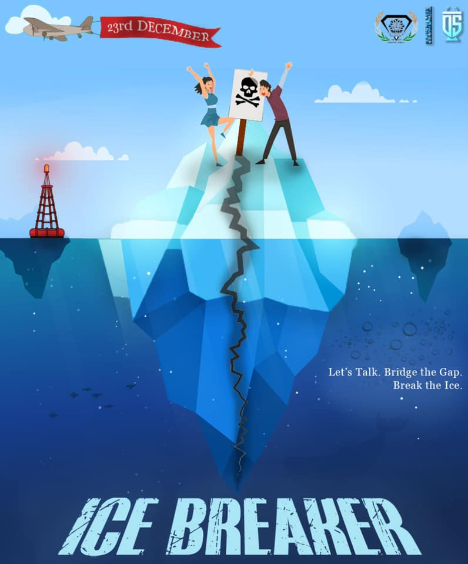

Who are we?
Our Missions
- To encourage young people to become actively involved in social concerns and uprisings.
- To aid students in the formation and articulation of their ideas in a logical and coherent manner.
- To assist students in developing the confidence to express themselves on a larger scale.
- To raise NIT Durgapur's profile in elocution by competing in various debating and public speaking competitions held across the country
Our Events
THE DEBATING SOCIETY comes with some great and awesome events every year with immense participation all around the campus here are some glimpses of those events.
Asian Parliamentry Debate II

The Asian Parliamentary Debate is our flagship, fest-scale event conducted on an international level. With a higher team cap, quality core adjudication panel, and even higher prize money, the competition got even better to bring out the best in the pan-India participants, fighting for the top spot over three days. This APD saw 180+ participants; ranging from the prestigious Delhi Debating Circuits to International Invited Adjudicators. It is the largest of its kind in Eastern India.
Fictionary 2.0
"The game of speed,mind,patience might have been heard with come technical games but,here is a twist as Debsoc presents you with one of the most played and loved game of movie lovers,anime admirer,book readers and web series watchers around the campus. Come and cherish you chance to win title of FICTION LEGEND".
A quiz event based on series, novels, films, and characters that find a special corner in our hearts. Fictionary gives us a breather from all the debating events in our repertoire. Participants have to be quick and witty to make the cut. Last year, Fictionary gathered over 500 participants. Performances were seen from every year, be it first, second, third, or the final year. We got to see a brilliant display of fast thinkers.

Ice Breaker
Ice Breaker was our event to initiate a conversation and to give first years an opportunity to think differently on a bit out-of-the-league topics. Participants were asked to send us their arguments either in support or in opposition, which were posted if they abided by the policies of Facebook. The participants with the maximum likes, comments, and shares plus considering OC’s views were chosen to be the winners.We received more than 120 responses from the first years.
Reverberate
"Come and learn how to express your mind among people.Come and learn how to influence a crowd, how to manage the awkward situation you had while making new friends.Come and explore the world of Professional speakers.Come to Reverberate."
We all know how it feels to have to present your ideas, only to find the right words aren’t available. A public speaking workshop, generally conducted at the start of the academic session here helps you overcome all those bouts of stuttering and gives us the confidence boost we all require. The workshop sees massive participation every year, and collects a lot of positive applause as well.
What If
"One of the most popular and biggest debating event of NIT Durgapur --What If, presented by The Debating Society.Come along with your loud voice and roar infront and against one another, express you know above others knowledge.Show your might with debate as Debsoc invites you to what if".
What if the world as you knew it, changed suddenly? How do you fare with unexpected situations and curveballs that life might throw your way in an alternate universe? We, the Debating Society, NIT Durgapur, bring to you What if?, an event that is sure to get you revved up. All you have to do is send us your video entries on the topics we provide you with. Accept the challenge and set the stage ablaze if you dare!